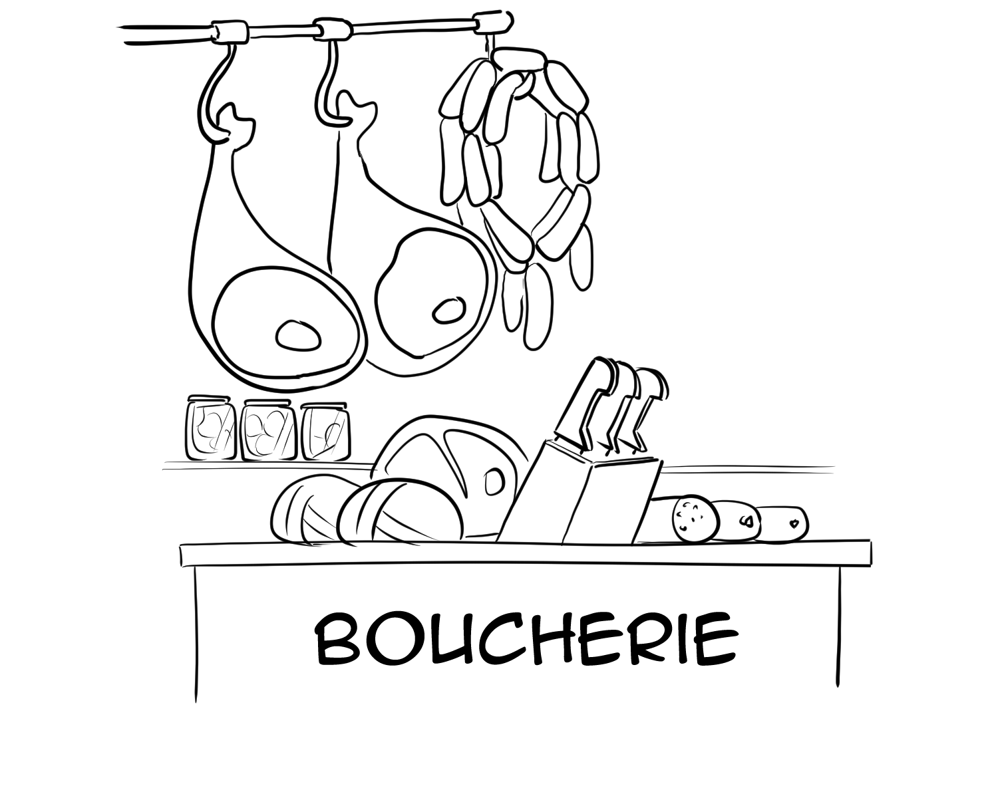

De la prairie à l'assiette 🥩
Notre atelier de boucherie est l'ultime étape pour garantir une traçabilité totale et une qualité irréprochable de nos viandes. C'est ici, au cœur de la ferme, que nous transformons directement une grande partie de notre production.
Nous y préparons la viande issue de nos vaches mixtes ainsi que la moitié de notre élevage porcin (le reste étant valorisé via la filière coopérative locale). Avoir notre propre atelier nous permet de maîtriser chaque étape et de vous garantir une viande 100 % locale et transparente.
Le respect de l'animal 🤝
Faire le choix d'une boucherie à la ferme, c'est assumer notre métier d'éleveur jusqu'au bout, avec éthique et responsabilité.
Nous mettons un point d'honneur à valoriser l'animal dans son intégralité (le fameux principe du "de la tête à la queue") afin de lutter contre le gaspillage alimentaire. Chaque morceau a sa noblesse et trouve sa place dans notre vitrine, que ce soit pour une belle pièce à griller, un plat mijoté ou nos préparations maison.
Charcuteries et viandes maturées 🥓
Dans notre atelier, nous laissons au temps le soin de sublimer les saveurs. Nos viandes bovines bénéficient d'un temps de maturation optimal pour développer toute leur tendreté et leurs arômes.
Côté porc, nous élaborons nos propres charcuteries artisanales selon des recettes traditionnelles. Nos saucisses, pâtés et découpes fraîches sont préparés avec passion, sans colorants ni conservateurs industriels. Le vrai goût de la viande paysanne, tout simplement !